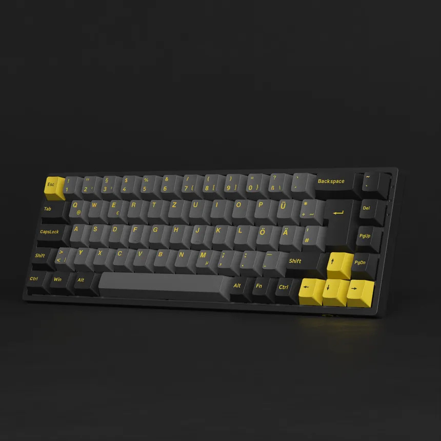
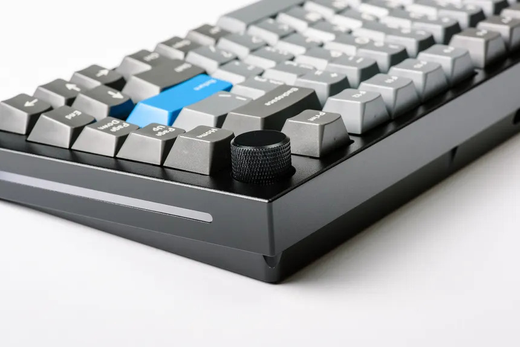
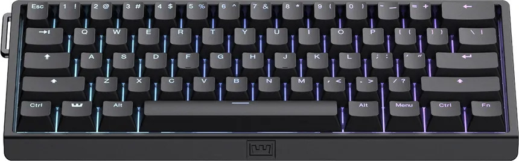

Tienda de Teclados Mecánicos
Lista de Modelos Disponibles

-
Keychron Q1 Pro
- Conexión inalámbrica, formato 75% y chasis de aluminio.

-
Akko 3068B Plus
- Formato compacto 65% con switches táctiles.

-
GMMK Pro
- Placa Gasket mount y selector giratorio de volumen.

-
Wooting 60he v2
- Chasis de aluminio y teclas PBT duraderas